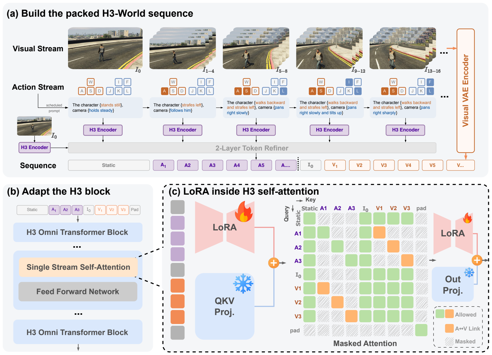
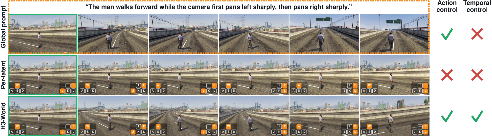
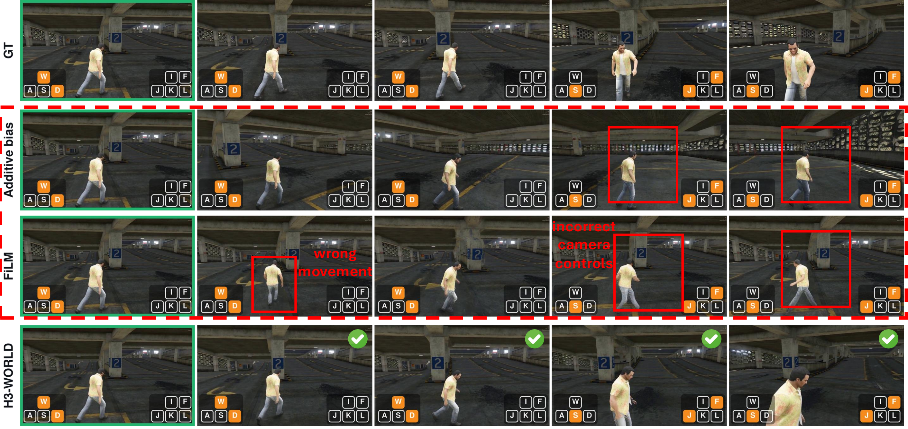
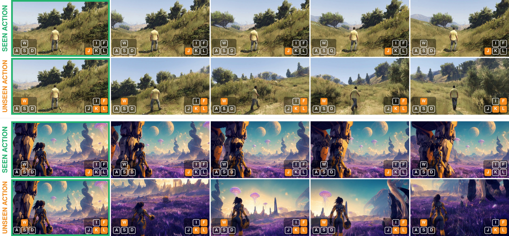

01
Neon alley · fast pan right
First-person camera control in a neon-lit city.
H3-World enables character and camera control across diverse visual environments.
Anonymous project page for conference review
H3-World follows camera and character actions across diverse, open-ended visual environments.
First-person camera control in a neon-lit city.
First-person lateral movement in a complex cave environment.
Third-person lateral navigation across an open desert scene.
Third-person upward camera motion in a detailed fantasy interior.
We introduce H3-World, an action-controllable world model that turns keyboard input into temporally grounded video control.
Built by fine-tuning MiniMax-H3 on gameplay footage, H3-World converts character and camera actions into a short English instruction for every video latent frame. These instructions are injected through the pretrained text pathway and aligned to their corresponding frames with a directed attention mask, enabling precise action-to-motion binding without adding action-specific trainable modules.
Only a rank-32 LoRA is trained on the self-attention projections. This lightweight adaptation produces controllable motion from the same initial frame under different action sequences, while supporting longer-horizon generation and generalization across diverse visual environments.
H3-World aligns language descriptions of keyboard actions with video latents, then adapts the pretrained H3 transformer with a lightweight LoRA.

H3-World follows different camera instructions at different moments within the same video.

Grounding actions in the pretrained language pathway yields coordinated character motion and camera control.

H3-World combines familiar character and camera primitives into action pairs never observed during training.
